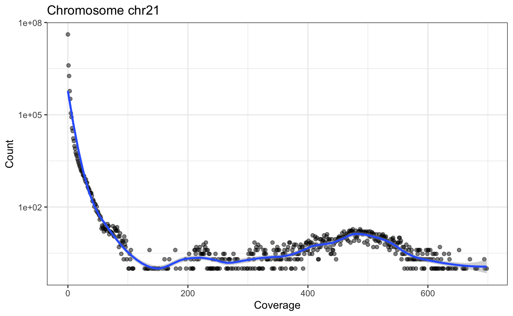
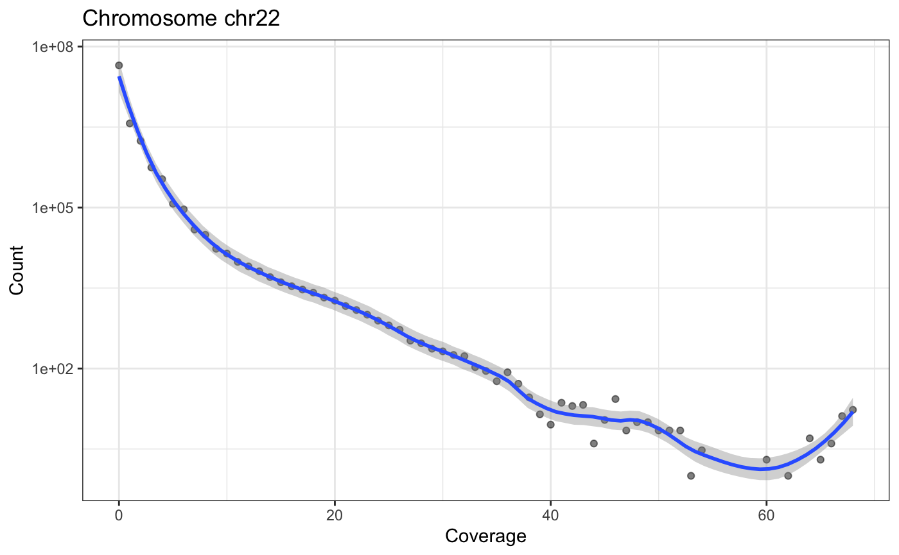
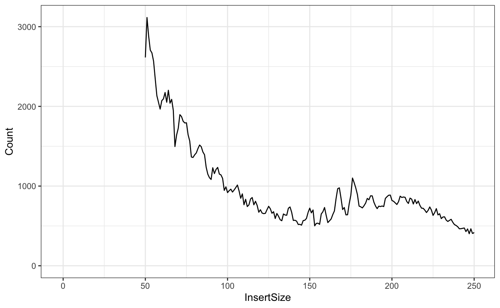

Abstract
This workshop employs Bioconductor GenomicRanges and GenomicFeatures infrastructure to perform basic import of aligned reads followed by quality control of an ATAC-Seq dataset. It will also examine how to use fragment length (insert size) to isolate chromatin compartments of interest such as putative nucleosome-free regions. Moving on to a multi-sample analysis, peak regions (called separately) will inform similarities between samples. Statistical identification of differential accessibility will provide a second measure of sample differences and serve as potential regions of interest for enrichment analysis and biological hypothesis generation. Data visualization throughout using the Integrated Genome Viewer (IGV) can make findings more intuitive, so students are encouraged to export datasets from R in formats compatible with IGV.Overview
Pre-requisites
This workshop assumes:
- A working and up-to-date version of R
- Basic knowledge of R syntax
- Familiarity with the GenomicRanges package and range manipulations
- Familiarity with BAM files and their contents
Participation
After a very brief review of ATAC-Seq and chromatin accessibility, students will work independently to follow this workflow. Additional materials are provided as links at the end of the workshop for those wanting deeper exposure. Additional materials include alignment from FASTQ files and peak calling.
Time outline
An example for a 45-minute workshop:
| Activity | Time |
|---|---|
| Introduction | 15m |
| Independent work | 2-3hr |
| Additional exercises (optional, external) | up to 12 hours |
Learning goals
- Describe how to import sequence alignments in BAM format into R
- Relate fragment size to genomic characteristics such as nucleosome occupancy and open chromatin.
- Perform basic alignment manipulations in R to enrich ATAC-seq data for chromatin characteristics.
- Gain familiarity with the IGV genome browser and examining data in genomic context.
- Visualize summaries of genomic signal using profile plots and heatmaps.
Learning objectives
- Load and save genomic data in BAM and BigWig formats [GenomicAlignments and rtracklayer].
- Perform basic QC plots from ATAC-Seq data.
- Isolate nucleosome-free and mononucleosome regions from ATAC-seq data.
- Install and use IGV to visualize data in genomic context.
- Create profile plots using the heatmaps package.
Background
Chromatin accessibility assays measure the extent to which DNA is open and accessible. Such assays now use high throughput sequencing as a quantitative readout. DNAse assays, first using microarrays(Crawford, Davis, et al. 2006) and then DNAse-Seq (Crawford, Holt, et al. 2006), requires a larger amount of DNA and is labor-indensive and has been largely supplanted by ATAC-Seq (Buenrostro et al. 2013).
The Assay for Transposase Accessible Chromatin with high-throughput sequencing (ATAC-seq) method maps chromatin accessibility genome-wide. This method quantifies DNA accessibility with a hyperactive Tn5 transposase that cuts and inserts sequencing adapters into regions of chromatin that are accessible. High throughput sequencing of fragments produced by the process map to regions of increased accessibility, transcription factor binding sites, and nucleosome positioning. The method is both fast and sensitive and can be used as a replacement for DNAse and MNase. A schematic of the protocol is given in Figure @ref(fig:protocol).

Schematic overview of ATAC-Seq protocol. Figure from Wikipedia.
An early review of chromatin accessibility assays (Tsompana and Buck 2014) compares the use cases, pros and cons, and expected signals from each of the most common approaches (Figure @ref(fig:chromatinAssays)).

Chromatin accessibility methods, compared. Representative DNA fragments generated by each assay are shown, with end locations within chromatin defined by colored arrows. Bar diagrams represent data signal obtained from each assay across the entire region. The footprint created by a transcription factor (TF) is shown for ATAC-seq and DNase-seq experiments.
The first manuscript describing ATAC-Seq protocol and findings outlined how ATAC-Seq data “line up” with other datatypes such as ChIP-seq and DNAse-seq (Figure @ref(fig:greenleaf)). They also highlight how fragment length correlates with specific genomic regions and characteristics (Buenrostro et al. 2013, Figure 3).
![Multimodal chromatin comparisons. From [@Buenrostro2013-dz], Figure 4. (a) CTCF footprints observed in ATAC-seq and DNase-seq data, at a specific locus on chr1. (b) Aggregate ATAC-seq footprint for CTCF (motif shown) generated over binding sites within the genome (c) CTCF predicted binding probability inferred from ATAC-seq data, position weight matrix (PWM) scores for the CTCF motif, and evolutionary conservation (PhyloP). Right-most column is the CTCF ChIP-seq data (ENCODE) for this GM12878 cell line, demonstrating high concordance with predicted binding probability.](imgs/greenleaf_chip_dnase_atac.png)
Multimodal chromatin comparisons. From (Buenrostro et al. 2013), Figure 4. (a) CTCF footprints observed in ATAC-seq and DNase-seq data, at a specific locus on chr1. (b) Aggregate ATAC-seq footprint for CTCF (motif shown) generated over binding sites within the genome (c) CTCF predicted binding probability inferred from ATAC-seq data, position weight matrix (PWM) scores for the CTCF motif, and evolutionary conservation (PhyloP). Right-most column is the CTCF ChIP-seq data (ENCODE) for this GM12878 cell line, demonstrating high concordance with predicted binding probability.
Buenrostro et al. provide a detailed protocol for performing ATAC-Seq and quality control of results (Buenrostro et al. 2015). Updated and modified protocols that improve on signal-to-noise and reduce input DNA requirements have been described.
Informatics overview
ATAC-Seq protocols typically utilize paired-end sequencing protocols. The reads are aligned to the respective genome using bowtie2, BWA, or other short-read aligner. The result, after appropriate manipulation, often using samtools, results in a BAM file. Among other details, the BAM format includes columns for:
A BAM file in text form. The output of samtools view is the text format of the BAM file (called SAM format). Bioconductor and many other tools use BAM files for input. Note that BAM files also often include an index .bai file that enables random access into the file; one can read just a genomic region without having to read the entire file.
- sequence name (
chr1) - start position (integer)
- a CIGAR string that describes the alignment in a compact form
- the sequence to which the pair aligns
- the position to which the pair aligns
- a bit flag field that describes multiple characteristics of the alignment
- the sequence and quality string of the read
- additional tags that tend to be aligner-specific
Duplicate fragments (those with the same start and end position of other reads) are marked and likely discarded. Reads that fail to align “properly” are also often excluded from analysis. It is worth noting that most software packages allow simple “marking” of such reads and that there is usually no need to create a special BAM file before proceeding with downstream work.
After alignment and BAM processing, the workflow can switch to Bioconductor.
Working with sequencing data in Bioconductor
The Bioconductor project includes several infrastructure packages for dealing with ranges (sequence name, start, end, +/- strand) on sequences (Lawrence et al. 2013) as well as capabilities with working with Fastq files directly (Morgan et al. 2016).
| Package | Use cases |
|---|---|
| Rsamtools | low level access to FASTQ, VCF, SAM, BAM, BCF formats |
| GenomicRanges | Container and methods for handling genomic reagions |
| GenomicFeatures | Work with transcript databases, gff, gtf and BED formats |
| GenomicAlignments | Reader for BAM format |
| rtracklayer | import and export multiple UCSC file formats including BigWig and Bed |
As noted in the previous section, the output of an ATAC-Seq experiment is a BAM file. As paired-end sequencing is a commonly-applied approach for ATAC-Seq, the readGAlignmentPairs function is the appropriate method to use.
Data import and quality control
Reading a paired-end BAM file looks a bit complicated, but the following code will:
- Read the included BAM file.
- Include read pairs only (
isPaired = TRUE) - Include properly paired reads (
isProperPair = TRUE) - Include reads with mapping quality >= 1
- Add a couple of additional fields,
mapq(mapping quality) andisize(insert size) to the default fields.
greenleaf = readGAlignmentPairs(
system.file(package='AtacSeqWorkshop',
'extdata/Sorted_ATAC_21_22.bam'),
param = ScanBamParam(
mapqFilter = 1,
flag = scanBamFlag(
isPaired = TRUE,
isProperPair = TRUE),
what = c("mapq", "isize")))Exercise: What is the class of greenleaf? Exercise: Use the GenomicAlignments::first() accessor to get the first read of the pair as a GAlignments object. Save the result as a variable called gl_first_read. Use the mcols accessor to find the “metadata columns” of gl_first_read. Exercise: How many read pairs map to each chromosome?
We can make plot of the number of reads mapping to each chromosome.
library(ggplot2)
library(dplyr)
chromCounts = table(seqnames(greenleaf)) %>%
data.frame() %>%
dplyr::rename(chromosome=Var1, count = Freq)To keep things small, the example BAM file includes only chromosomes 21 and 22.
ggplot(chromCounts, aes(x=chromosome, y=count)) +
geom_bar(stat='identity') +
theme(axis.text.x = element_text(angle = 45, hjust = 1))Reads per chromosome. In our example data, we are using only chromosomes 21 and 22.
Normalizing by the chromosome length can yield the reads per megabase which should crudely be similar across all chromosomes.
And show a plot. For two chromosomes, this is a little underwhelming.
ggplot(chromCounts, aes(x=chromosome, y=readsPerMb)) +
geom_bar(stat='identity') +
theme(axis.text.x = element_text(angle = 45, hjust = 1)) +
theme_bw()Read counts normalized by chromosome length. This is not a particularly important plot, but it can be useful to see the relative contribution of each chromosome given its length.
Coverage
The coverage method for genomic ranges calculates, for each base, the number of overlapping features. In the case of a BAM file from ATAC-Seq converted to a GAlignmentPairs object, the coverage gives us an idea of the extent to which reads pile up to form peaks.
## [1] "SimpleRleList"
## attr(,"package")
## [1] "IRanges"The coverage is returned as a SimpleRleList object. Using names can get us the names of the elements of the list.
## [1] "chr1" "chr2" "chr3" "chr4" "chr5" "chr6" "chr7" "chr8"
## [9] "chr9" "chr10" "chr11" "chr12" "chr13" "chr14" "chr15" "chr16"
## [17] "chr17" "chr18" "chr19" "chr20" "chr21" "chr22" "chrX" "chrY"
## [25] "chrM"There is a name for each chromosome. Looking at the chr21 entry:
## integer-Rle of length 48129895 with 397462 runs
## Lengths: 9411376 50 11 50 ... 14 28 10806
## Values : 0 2 0 2 ... 2 1 0we see that each chromosome is represented as an Rle, short for run-length-encoding. Simply put, since along the chromosome there are many repeated values, we can recode the long vector as a set of (length: value) pairs. For example, if the first 9,410,000 base pairs have 0 coverage, we encode that as (9,410,000: 0). Doing that across the chromosome can very significantly reduce the memory use for genomic coverage.
The following little function, plotCvgHistByChrom can plot a histogram of the coverage for a chromosome.
plotCvgHistByChrom = function(cvg, chromosome) {
library(ggplot2)
cvgcounts = as.data.frame(table(cvg[[chromosome]]))
cvgcounts[,1] = as.numeric(as.character(cvgcounts[,1]))
colnames(cvgcounts) = c('Coverage', 'Count')
ggplot(cvgcounts, aes(x=Coverage, y=Count)) +
ggtitle(paste("Chromosome",chromosome)) +
geom_point(alpha=0.5) +
geom_smooth(span=0.2) +
scale_y_log10() +
theme_bw()
}
for(i in c('chr21', 'chr22')) {
print(plotCvgHistByChrom(cvg, i))
}
Fragment Lengths
The first ATAC-Seq manuscript (Buenrostro et al. 2013) highlighted the relationship between fragment length and nucleosomes (see Figure @ref{fig:flgreenleaf}).
knitr::include_graphics('https://www.ncbi.nlm.nih.gov/pmc/articles/PMC3959825/bin/nihms554473f2.jpg')
Relationship between fragment length and nucleosome number.
Remember that we loaded the example BAM file with insert sizes (isize). We can use that “column” to examine the fragment lengths (another name for insert size). Also, note that the insert size for the first read and the second are the same (absolute value). Here, we will use first.
GenomicAlignments::first(greenleaf)
mcols(GenomicAlignments::first(greenleaf))
class(mcols(GenomicAlignments::first(greenleaf)))
head(mcols(GenomicAlignments::first(greenleaf))$isize)
fraglengths = abs(mcols(GenomicAlignments::first(greenleaf))$isize)We can plot the fragment length density (histogram) using the density function.
Fragment length histogram.
Exercise: Adjust the xlim, bw, and try log="y" in the plot to highlight features present in figure .
And for fun, the ggplot2 version:
library(dplyr)
library(ggplot2)
fragLenPlot <- table(fraglengths) %>% data.frame %>% rename(InsertSize = fraglengths,
Count = Freq) %>% mutate(InsertSize = as.numeric(as.vector(InsertSize)),
Count = as.numeric(as.vector(Count))) %>% ggplot(aes(x = InsertSize, y = Count)) +
geom_line()
print(fragLenPlot + theme_bw() + lims(x=c(-1,250)))
Knowing that the nucleosome-free regions will have insert sizes shorter than one nucleosome, we can isolate the read pairs that have that characteristic.
And the mononucleosome reads will be between 187 and 250 base pairs for insert size/fragment length.
gl_mn = greenleaf[mcols(GenomicAlignments::first(greenleaf))$isize>187 &
mcols(GenomicAlignments::first(greenleaf))$isize<250 ]Finally, we expect nucleosome-free reads to be enriched near the TSS while mononucleosome reads should not be. We will use the heatmaps package to take a look at these two sets of reads with respect to the tss of the human genome.
library(TxDb.Hsapiens.UCSC.hg19.knownGene)
proms = promoters(TxDb.Hsapiens.UCSC.hg19.knownGene, 250, 250)
seqs = c('chr21','chr22')
seqlevels(proms, pruning.mode='coarse') = seqs # only chromosome 21 and 22Take a look at the heatmaps package vignette to learn more about the heatmaps package capabilities.
library(heatmaps)
gl_nf_hm = CoverageHeatmap(proms,coverage(gl_nf),coords=c(-250,250))
label(gl_nf_hm) = "NucFree"
scale(gl_nf_hm)=c(0,10)
plotHeatmapMeta(gl_nf_hm)Enrichment of nucleosome free reads just upstream of the TSS.
gl_mn_hm = CoverageHeatmap(proms,coverage(gl_mn),coords=c(-250,250))
label(gl_mn_hm) = "MonoNuc"
scale(gl_mn_hm)=c(0,10)
plotHeatmapMeta(gl_mn_hm)Depletion of nucleosome free reads just upstream of the TSS.
Comparison of signals at TSS. Mononucleosome data on the left, nucleosome-free on the right.
Viewing data in IGV
Install IGV from here.
We export the greenleaf data as a BigWig file.
Exercise: In IGV, choose hg19. Then, load the greenleaf.bw file and explore chromosomes 21 and 22. Exercise: Export the nucleosome-free portion of the data as a BigWig file and examine that in IGV. Where do you expect to see the strongest signals?
Additional work
For those working extensively on ATAC-Seq, there is a great workflow/tutorial available from Thomas Carrol:
https://rockefelleruniversity.github.io/RU_ATAC_Workshop.html
Feel free to work through it. In addition to the work above, there is also the ATACseqQC package vignette that offers more than just QC. At least a couple more packages are available in Bioconductor.
Appendix
Session info
## R Under development (unstable) (2019-01-14 r75992)
## Platform: x86_64-apple-darwin15.6.0 (64-bit)
## Running under: macOS Mojave 10.14.2
##
## Matrix products: default
## BLAS: /Library/Frameworks/R.framework/Versions/3.6/Resources/lib/libRblas.0.dylib
## LAPACK: /Library/Frameworks/R.framework/Versions/3.6/Resources/lib/libRlapack.dylib
##
## locale:
## [1] en_US.UTF-8/en_US.UTF-8/en_US.UTF-8/C/en_US.UTF-8/en_US.UTF-8
##
## attached base packages:
## [1] stats4 parallel stats graphics grDevices utils datasets
## [8] methods base
##
## other attached packages:
## [1] rtracklayer_1.45.1
## [2] heatmaps_1.9.0
## [3] TxDb.Hsapiens.UCSC.hg19.knownGene_3.2.2
## [4] GenomicFeatures_1.37.3
## [5] AnnotationDbi_1.47.0
## [6] dplyr_0.8.1
## [7] ggplot2_3.2.0
## [8] GenomicAlignments_1.21.4
## [9] Rsamtools_2.1.2
## [10] Biostrings_2.53.0
## [11] XVector_0.25.0
## [12] SummarizedExperiment_1.15.5
## [13] DelayedArray_0.11.2
## [14] BiocParallel_1.19.0
## [15] matrixStats_0.54.0
## [16] Biobase_2.45.0
## [17] GenomicRanges_1.37.14
## [18] GenomeInfoDb_1.21.1
## [19] IRanges_2.19.10
## [20] S4Vectors_0.23.17
## [21] BiocGenerics_0.31.4
## [22] knitr_1.23
## [23] BiocStyle_2.13.2
##
## loaded via a namespace (and not attached):
## [1] bitops_1.0-6 fs_1.3.1 EBImage_4.27.0
## [4] bit64_0.9-7 RColorBrewer_1.1-2 progress_1.2.2
## [7] httr_1.4.0 rprojroot_1.3-2 tools_3.6.0
## [10] backports_1.1.4 R6_2.4.0 KernSmooth_2.23-15
## [13] DBI_1.0.0 lazyeval_0.2.2 colorspace_1.4-1
## [16] withr_2.1.2 tidyselect_0.2.5 prettyunits_1.0.2
## [19] bit_1.1-14 compiler_3.6.0 xml2_1.2.0
## [22] desc_1.2.0 labeling_0.3 bookdown_0.11
## [25] scales_1.0.0 pkgdown_1.3.0 commonmark_1.7
## [28] stringr_1.4.0 digest_0.6.19 tiff_0.1-5
## [31] fftwtools_0.9-8 rmarkdown_1.13 jpeg_0.1-8
## [34] pkgconfig_2.0.2 htmltools_0.3.6 plotrix_3.7-6
## [37] highr_0.8 htmlwidgets_1.3 rlang_0.4.0
## [40] rstudioapi_0.10 RSQLite_2.1.1 RCurl_1.95-4.12
## [43] magrittr_1.5 GenomeInfoDbData_1.2.1 Matrix_1.2-17
## [46] Rcpp_1.0.1 munsell_0.5.0 abind_1.4-5
## [49] stringi_1.4.3 yaml_2.2.0 MASS_7.3-51.4
## [52] zlibbioc_1.31.0 grid_3.6.0 blob_1.1.1
## [55] crayon_1.3.4 lattice_0.20-38 hms_0.4.2
## [58] locfit_1.5-9.1 pillar_1.4.2 codetools_0.2-16
## [61] biomaRt_2.41.3 XML_3.98-1.20 glue_1.3.1
## [64] evaluate_0.14 BiocManager_1.30.4 png_0.1-7
## [67] gtable_0.3.0 purrr_0.3.2 assertthat_0.2.1
## [70] xfun_0.8 roxygen2_6.1.1 tibble_2.1.3
## [73] memoise_1.1.0MACS2
The MACS2 package is a commonly-used package for calling peaks. Installation and other details are available1.
pip install macs2References
Buenrostro, Jason D, Paul G Giresi, Lisa C Zaba, Howard Y Chang, and William J Greenleaf. 2013. “Transposition of Native Chromatin for Fast and Sensitive Epigenomic Profiling of Open Chromatin, DNA-binding Proteins and Nucleosome Position.” Nature Methods 10 (12):1213–8. https://doi.org/10.1038/nmeth.2688.
Buenrostro, Jason D, Beijing Wu, Howard Y Chang, and William J Greenleaf. 2015. “ATAC-seq: A Method for Assaying Chromatin Accessibility Genome-Wide.” Current Protocols in Molecular Biology / Edited by Frederick M. Ausubel ... [et Al.] 109 (January):21.29.1–9. https://doi.org/10.1002/0471142727.mb2129s109.
Crawford, Gregory E, Sean Davis, Peter C Scacheri, Gabriel Renaud, Mohamad J Halawi, Michael R Erdos, Roland Green, Paul S Meltzer, Tyra G Wolfsberg, and Francis S Collins. 2006. “DNase-chip: A High-Resolution Method to Identify DNase I Hypersensitive Sites Using Tiled Microarrays.” Nature Methods 3 (7):503–9. http://www.ncbi.nlm.nih.gov/pubmed/16791207?dopt=AbstractPlus.
Crawford, Gregory E, Ingeborg E Holt, James Whittle, Bryn D Webb, Denise Tai, Sean Davis, Elliott H Margulies, et al. 2006. “Genome-Wide Mapping of DNase Hypersensitive Sites Using Massively Parallel Signature Sequencing (MPSS).” Genome Research 16 (1):123–31. http://www.ncbi.nlm.nih.gov/pubmed/16344561?dopt=AbstractPlus.
Lawrence, Michael, Wolfgang Huber, Hervé Pagès, Patrick Aboyoun, Marc Carlson, Robert Gentleman, Martin T Morgan, and Vincent J Carey. 2013. “Software for Computing and Annotating Genomic Ranges.” PLoS Computational Biology 9 (8):e1003118. https://doi.org/10.1371/journal.pcbi.1003118.
Morgan, Martin, Herve Pages, V Obenchain, and N Hayden. 2016. “Rsamtools: Binary Alignment (Bam), Fasta, Variant Call (Bcf), and Tabix File Import.” R Package Version 1 (0):677–89.
Tsompana, Maria, and Michael J Buck. 2014. “Chromatin Accessibility: A Window into the Genome.” Epigenetics & Chromatin 7 (1):33. https://doi.org/10.1186/1756-8935-7-33.